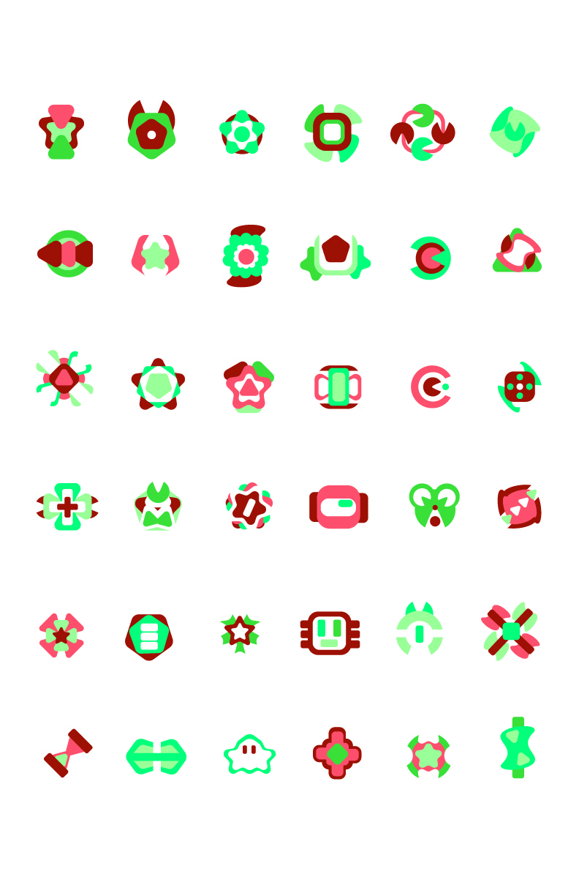
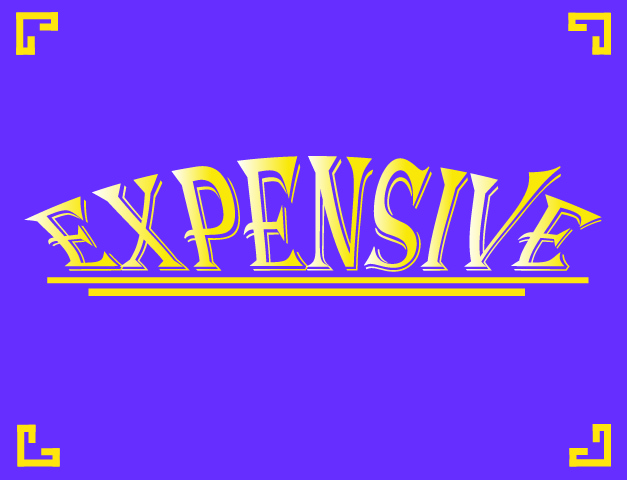

Edited Beginnings
One of the first projects is an introduction to Adobe Photoshop. Simply learning the basics is a step in the right direction, but what exactly is going on? The imagery of the city, sidewalk, boats, and flowers was required, but using layering and other techniques, the rest was up to experimentation. Due to being hesitant at the beginning, the image turned out to be somewhat abstract. The sky consists of strange patterns, and there is an orange slice along the river. Overall, I found it not quite the best, but definitely an interesting beginning piece.
Floral Patterns

As an introduction to the wonders of Adobe Illustrator, one of the first projects was to use its features to our advantage, in this case being a repetitive circular pattern-like technique. I decided to go with a warm color palette, as it resembles a sunset, almost as if they are snowflakes falling from the skies, glowing orange and red from the light of a sunset.
Unique Shaped Patterns

Personally being one of my favorites, this project consists of many different shapes and symbol-like imagery. Each one must differ from the last, and no two should be exactly the same. Eventually, coming up with new designs becomes a challenge, as you may exhaust your ideas quickly within a row or two. They are to be created from basic shapes and turned into something new. One of my favorite aspects was that the color, while limited as required, could be randomized using a script that could be pasted within Illustrator.
Self Illustration

Continuing through the journey of discovering Illustrator, we have the self-illustration project, in which you take an image of yourself, recreate the important details within the program, and use a limited color palette for each of the four total images. The background consists of repetitive patterns, also following the color palette.

Expensive
These pieces are ones that showcase themselves quite well. The main idea was to design a word around itself. In this case, expensive. My idea for the one left was the idea of royalty, as purple and gold are often seen as much more royal and regal colors. The middle one comes off as potentially important tax or finance paperwork, as the work itself is stamped onto the pile of papers. Lastly, the one on the right, in my mind, relates to the high cost of a certain brand. Perhaps they sell high-end clothing for high prices.
SJSU Art Building
One of the first videos to start off with is a simple black-and-white tour of the art building at San Jose State University. While a pretty simplistic video, I believe it to be good.
Chasing Edit
Using an existing movie clip, messing around with editing and adding in cuts is a key component to video editing, hence the name of the video.
Black Hole Edit
Going back to the idea of editing existing clips, now we mess around with sound effects as well, adding them where they may fit into play with the video footage.
Just Walkin'
Created with original footage of me going through the San Jose Japanese Friendship Garden, this video combines many different elements, such as music, very subtle animation, and fading. This is one video I am quite proud of making.
Waxel The Candle
Using a different program entirely known as Krita, I tried my hand at some very basic animation. Utilizing sound effects helps bring some life into the character.